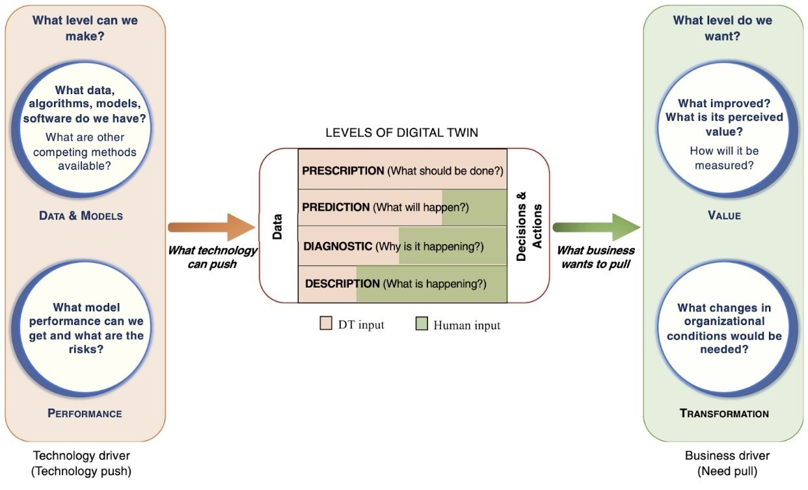

Teaching
AI Applications for the AEC Industry
Equipping future professionals in architecture, engineering, and construction with the knowledge and tools to harness AI — aligning what technology can deliver with the value the industry needs.
Overview
Course information
- Course ID
- CEE 329 (Spring 2026)
- Instructors
- Iro Armeni, Pooja Jain (Adjunct Lecturer)
- Prof. Martin Fischer is on sabbatical this year.
- Teaching Assistant
- Jinpu Cao
- Lectures
- Mondays and Wednesdays 9:30–10:50 AM, Y2E2 292A
- Credits
- 3
- Office Hours
- Iro Armeni — by appointment, Y2E2 233
- Pooja Jain — by appointment, location TBD
- Jinpu Cao — TBD
- Online Material
- Canvas
- Notes
- For CEE MS SDC students: included in the Requirements.
Description
Course description
Motivation
This course on AI applications in architecture, engineering, and construction (AEC) equips future professionals with vital knowledge and tools to harness artificial intelligence (AI) solutions, addressing the AEC industry's challenges. The curriculum underscores AI's transformative potential in design, construction, and management, advocating for its integration into project delivery and operational workflows.
The course aims to educate the next generation of engineers, architects, entrepreneurs, and builders in applying advanced technologies for smarter project execution, strategic planning, and predictive analysis, leading to practices that significantly elevate sustainability and efficiency. It also emphasizes the importance of considering sociopolitical dynamics and ethical dimensions, recognizing that AI's impact extends beyond individual projects to national, regional, and industry-wide scales. This broader perspective ensures that AI applications are developed and deployed responsibly, fostering positive societal outcomes and upholding ethical standards within the evolving AEC landscape.
Vision
We envision that professionals in all disciplines involved in shaping the design, construction, and operation of the built environment will leverage data-driven, AI-based methods to create design solutions that balance the aspirations and concerns of all the main building stakeholders, because they:
- understand the range of performance of previous building projects and the drivers of performance,
- gain insights into the full design space thanks to rapid simulations of building performance for all important performance aspects, and
- continue to learn how to further improve the performance of buildings.
Note that “design” is understood holistically here. It includes the design of the building itself (“product design”), but also the design of the construction process, operational procedures, etc. (“process and organization design”), since a product design enables or hinders certain processes and vice versa.
Learning objectives
This vision is a few years away. Today and for the foreseeable future, the best performance for a building project team will be achieved through a purposeful combination of AI-based, data-driven methods and multi-disciplinary teams. In other words, we need to learn to combine human and artificial intelligence, and to understand what AI systems can and cannot do versus what humans are good at.
The course therefore introduces the most applicable AI and data-driven methods (Machine Learning, Computer Vision and Pattern Recognition, and Natural Language Processing). Students will understand the types of problems these methods address, as well as their limitations, so that they can connect AI methods with the work of AEC industry professionals as envisioned above. By the end of the course, students should be able to:
- present a business plan and proof of concept (POC) for a specific AI solution within a company,
- understand the GenAI ecosystem, including its infrastructure, legal, ethical, and human-centric aspects,
- articulate an industry problem clearly (the “value” perspective, right side of Figure 1) to set up the expected insights (center of Figure 1) from the application of AI, and establish the data necessary to generate those insights,
- understand the insights that a particular AI method can generate when combined with the relevant data (the “data” perspective, left side of Figure 1), and
- connect the data and value perspectives.

Figure 1 guides the course and is complemented by other frameworks. To illustrate the framework, consider a real-world example of a mid-sized general contractor in Norway. The contractor's innovation team developed weekly and daily construction site management software combining BIM and the Last Planner System. The system worked very well on a few demonstration projects, helping foremen and the superintendent understand the work accomplished and the work ahead, both in detail and holistically. Gunnar and his team therefore expected rapid deployment across many projects. This did not happen.
Figure 1 explains, at least in part, why. Working through the diagram from the technology perspective, the technology improved the description of what was happening on site, and some site staff found this helpful. Working through it from the value side, most site staff really wanted a prescription — they wanted to know what should be done tomorrow and beyond. The insights expected by the business did not align with the insights the technology could provide. Such misalignments appear in most attempts to leverage technology for better decision making, and they motivate this course: to learn to align the value and technology perspectives.
Structure
Course content & grading
Course components
Students learn about AI applications in AEC through five course components:
- Class lectures
- Class readings and short videos
- Assignments
- Guest lectures
- Course project
Grading
| Weight | Component |
|---|---|
| 25% | Class attendance, participation, and engagement with guest speakers |
| 25% | Assignments (10% each) |
| 50% | Course project with industry partners |
Projects
Course project
In the course project, students work with an industry practitioner who offers a strong data or value perspective. Students complement that perspective with the other one to establish an AI-based, data-driven method for generating insights that support decisions.